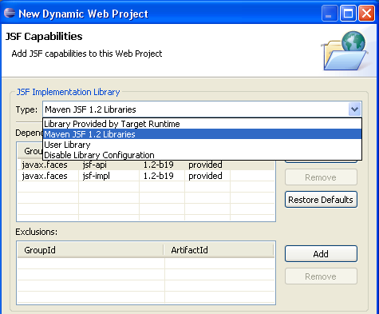

| Maven WTP 3.1 Library Providers |
When creating or editing WTP projects with JBoss Tools Maven Integration enabled it is now possible to use Maven as the library provider.

For this release only the JSF facet have this enabled, but in future releases we will add more facet specific defaults (i.e. portal, seam, etc.).
Note: be sure to use the latest m2eclipse development release with JBoss Tools for this to work.
Related Jira
|